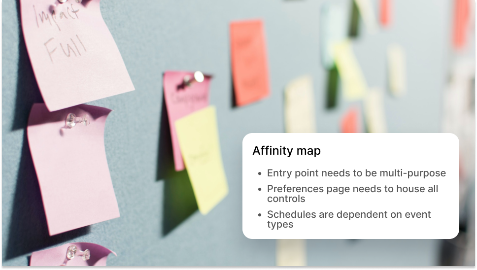
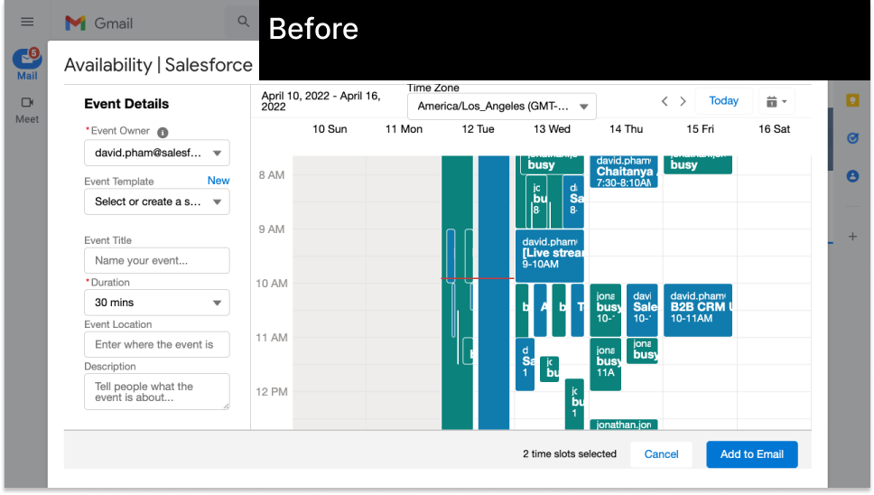
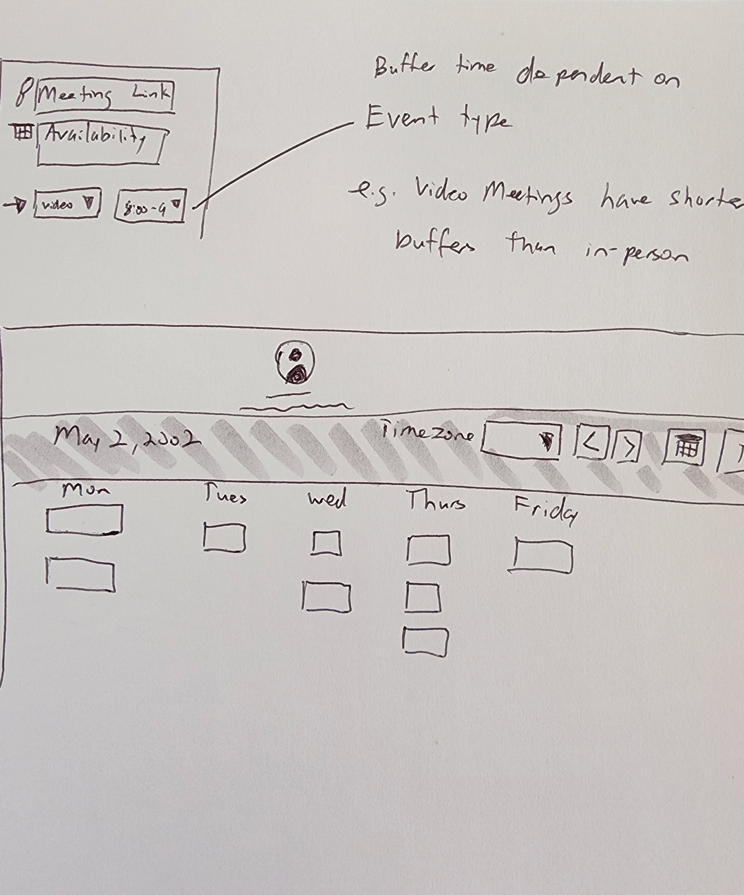
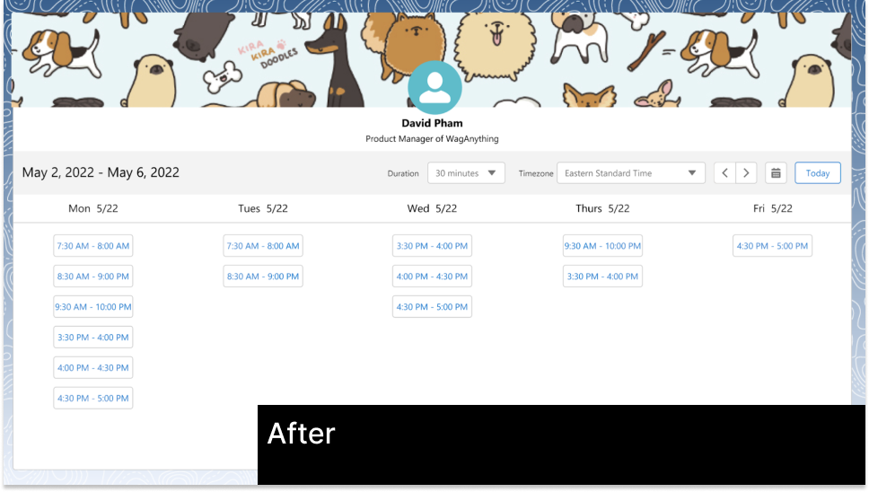
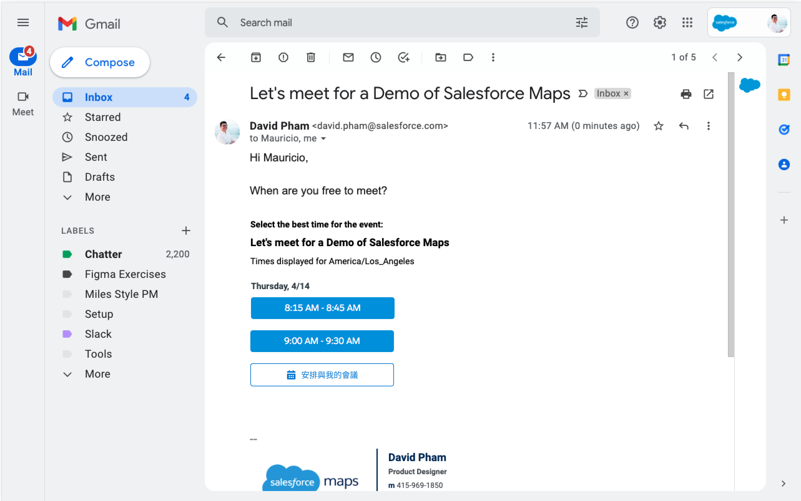
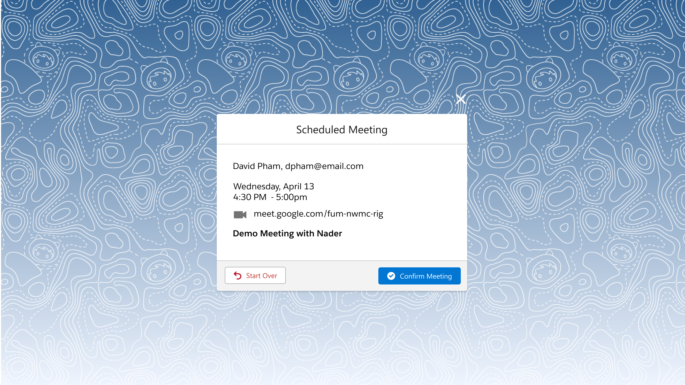

SALESFORCE INBOX
Salesforce Inbox is a suite of mobile and desktop productivity apps that bring email, calendar, and Salesforce integration together to help sales reps sell smarter.
Salesforce Inbox aims to be an integral tool to increase the productivity and efficiency of its users. The Inbox mobile app surfaces relevant Salesforce information in your email, providing a level of context of your customer interactions. It also offers a collection of productivity tools that help take care of the daily busy work that sales reps encounter.
THE PROBLEM
There's a lot of scheduling inefficiencies with the current feature. How might we save time on scheduling meetings and increase engagement with making more meetings?
RESEARCH
I started with questions to understand the problem. Made sure I knew things like scope, what other products would be affected by this new feature, the mechanics of how the feature will work, who are the stakeholders, who will be part of the team to deliver this, etc.
Then, I did a heuristics analysis of issues with the current inbox and assessed how the new feature would fit in to solve for current missing abilities. Also did competitive analysis on how other competitors in the scheduling space handle scheduling meetings. For example, Calendly has a simplified flow to ask for availability using only 4 screens.
DESIGN THINKING
I had an epiphany moment by utilizing my focus group of solution engineers, success architects, and support agents to workshop with me. Together we made an affinity map exposing the preliminary insights that chunked together how dependent buffer times were to event types among other discoveries. The workshop used my prototype to user test scenarios on how might their clients use the feature.
By pairing different people together (whom don't normally work together) in the same room I was able to extract the idea that the “event times” should be paired with “event types” because they’re dependent on each other. For example, your video types of meetings would have smaller buffer times compared to the in-person event types.
    